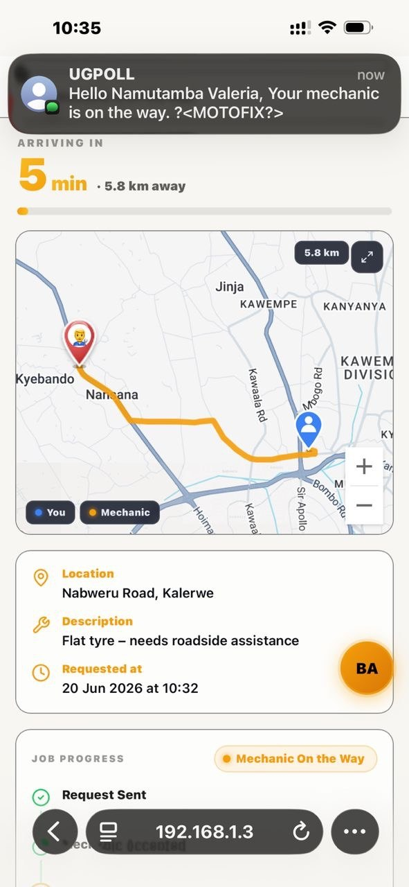
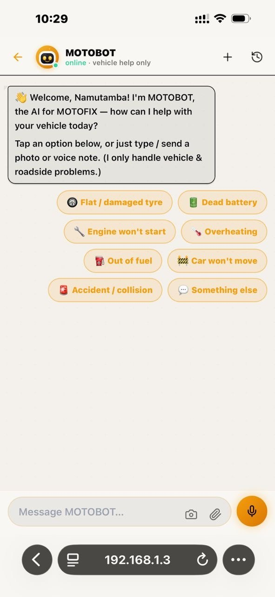

A good app makes hard things feel effortless — and that ease is the hardest part to build. Behind MOTOFIX's few simple taps sit three complete applications, engineered from the ground up: the driver app, the mechanic and tow-provider app, and the admin control room. I led the frontend across all three — designing and building the interfaces, the real-time experience, and the AI features inside them.
Three apps, one product
Each app is a full React and TypeScript application, mobile-first and built for the phones Ugandans actually carry, with light and dark themes throughout. They are deliberately distinct — a stressed driver, a working mechanic and an admin need very different things — yet they share one design language, so MOTOFIX feels like a single, coherent product rather than three separate tools stitched together.

Help you can watch arrive
The live-tracking map is the part I am proudest of. The driver and the mechanic each see the same journey — the route between them, a pin that moves along the road, and an ETA that counts down — kept in step over a live WebSocket connection. The drawn route shrinks in real time as the mechanic advances, the connection survives drops and reconnects on its own, and the screen updates the instant anything changes rather than waiting on a refresh. Getting real-time UI to feel trustworthy on a patchy mobile network was a real engineering challenge, not a drag-and-drop.

Making the AI genuinely usable
MOTOBOT, the in-app assistant, is the feature people notice — but the model is the easy part. The engineering was in the experience around it: a multimodal chat where a driver can type, record a voice note, or snap a photo of the fault and get a clear answer back; a floating assistant that follows them across the app; on-device conversation history; responses that stream in so it never feels frozen; and a pre-submit cost estimate so they walk into the repair already informed. Every one of those is interface and state-management work that turns a raw API into something a frightened driver on the roadside can actually use.

The details that earn trust
Reliability lives in the small things, and I sweated them: raw GPS coordinates resolved into readable place names so no one ever sees a string of numbers; optimistic updates that change the screen instantly without ever flickering back; skeleton loaders so the app never looks broken while data arrives; an automatic, secure session timeout; and graceful handling for when the network simply is not there. Software people lean on during a breakdown is held to a higher bar than a demo — fast, clear and dependable on a real phone, on a real roadside. That bar shaped every screen I built.